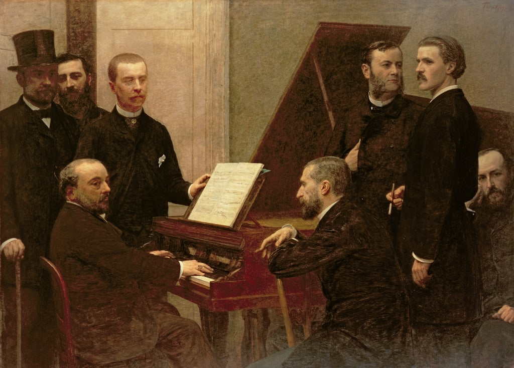
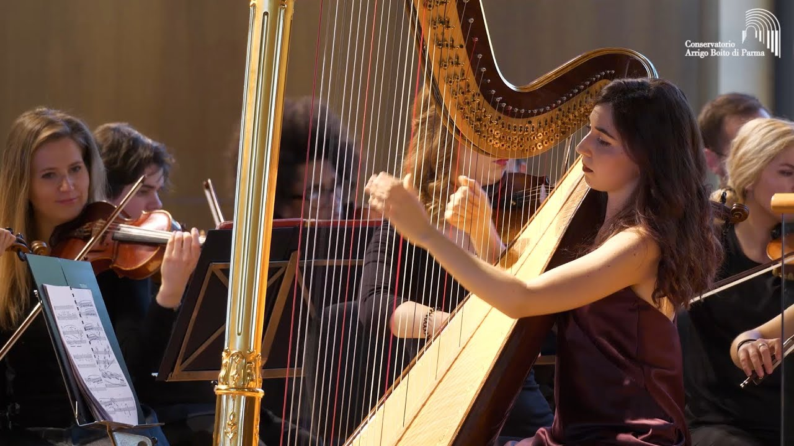
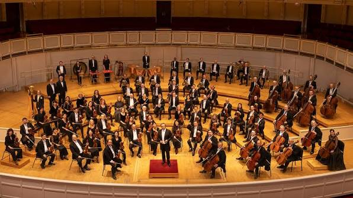
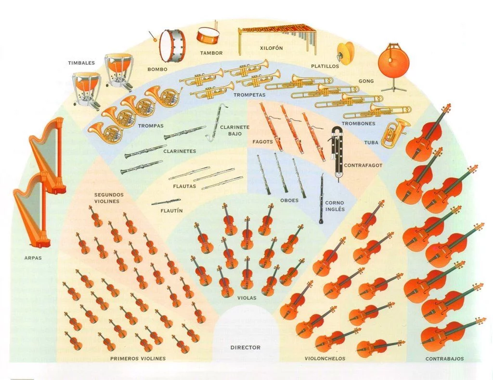

En el Romanticismo se producen importantes avances técnicos en la fabricación de los instrumentos.
Mejoras técnicas y nuevos instrumentos
Como ya hemos comentado, el instrumento por excelencia durante el periodo romántico será el piano, que a principios del siglo xix incorporará importantes mejoras para responder a las exigencias de la música de compositores como Chopin y Liszt. Entre esas mejoras cabe mencionar la incorporación de un armazón de acero que permite aumentar la tensión y la sonoridad de las cuerdas, el añadido de un tercer pedal y el mecanismo de doble repetición de la tecla, que permite hacer notas repetidas a mayor velocidad.
Un instrumento de cuerda pulsada que alcanzó gran popularidad en el Romanticismo fue el arpa, porque se adaptaba muy bien al carácter íntimo y poético de muchas piezas románticas. A principios del siglo xix, el fabricante de pianos Sebastián Érard creó el arpa de pedales dobles.
En el Romanticismo se perfeccionan los mecanismos de válvulas y pistones de los instrumentos de viento madera y viento metal, que adquirirán un mayor protagonismo en este periodo. Así, a la orquesta se incorporarán definitivamente los trombones y las tubas, en viento metal, y el corno inglés, el clarinete bajo y el flautín, en viento madera. La plantilla de percusión también se amplía con instrumentos como el bombo, los platillos, la celesta, etc.
 |
 |
 |
La orquesta en el Romanticismo
La incorporación de nuevos instrumentos de viento a la orquesta durante el periodo romántico obligará a una ampliación de la sección de cuerda frotada (violines, violas, etc.) para equilibrar la potencia sonora entre secciones. Surgirán así orquestas más grandes que las del Clasicismo, siendo normal en el siglo XIX encontrar orquestas de entre 80 y 100 músicos. El piano y el arpa aparecerán, en ocasiones, como otros instrumentos más de la orquesta, no como solistas.
